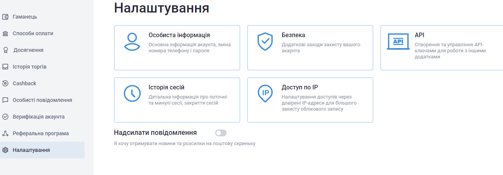
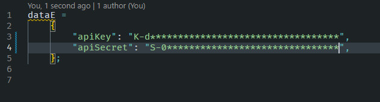
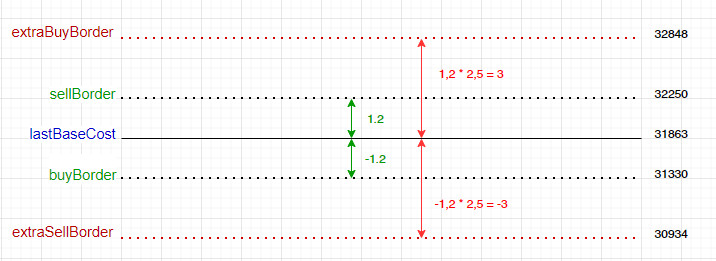
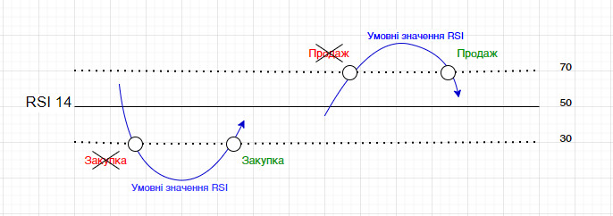

Налаштування доступу бота
Робота бота відбувається викоритсовуючи технологію обмінів між біржею та програмою по API.
Перед запуском бота необхідно відкрити у будь-якому текстовому редакторі файл “apiS.js”, та у відповідні поля "apiKey" та "apiSecret" прописати ваші ключі. У поле "apiKey" - записати відкритий ключ, а у поле "apiSecret" - записати секретний ключ. отримати їх можна залогінившись на сайті “Exmo”, та перейшовши у розділ “Налаштування”. Далі перейти у розділ “API - створення та управління API-ключами…”

В цьому розділі необхідно внизу сторінки натиснути кнопку “Створити API-ключі” та виконати всі інструкції. Увага: секретний ключ буде відображено у повному вигляді лише раз, тому його треба буде зберегти, або записати. Після повторного входу до цього розділу секретний ключ буде відображатись у скороченій формі і повторно використати його буде не можливо. Якщо ви не зафіксували його ніде, то треба буде перегенерувати нові API-ключі. Якщо ви ключ згенеруєте і використаєте у програмі, а потім зайдете сюди і видалите ці ключі, то програма перестане працювати. Будьте уважні.
Після запису ключів у программу, вони мають мати приблизно такий вигляд:

Де замість знаків “*” будуть Ваші ключі.
Ці дані налаштовуються один раз, і використовуються для обмінів маж програмою та біржею Exmo по API.
Після цього файл необхідно зберегти і провести налаштування роботи бота.
Налаштування роботи бота
Всі налаштування роботи бота задаються у окремому файлі “pairS.js”. Даний файл включає як стандартні налаштування кріптопар, які встановлюються самою біржею, так і налаштування алгоритмів. В даний момент бот працює лише по одній парі - першій зазначеній у файлі “pairS.js”.
Описання алгоритмів
1. Базово-граничний аналіз:
В основі даного аналізу у якості бази використовується певне значення ціни кріптовалюти(“lastBaseCost”) та границі спрацювання алгоритму на закупку(“buyBorder”) чи продаж(“sellBorder”). Границі спрацювання задаються у відсотках відносно базової ціни.
При першому запуску у якості бази використовується значення ціни на початок дня. Надалі алгоритм аналізує зміну поточної ціни кріптопари відносно ціни зазначеної у якості базової, та при досягненні встановлених відхилень подає боту команду на закупку/продаж кріптовалюти.
У даному алгоритмі також є поняття Екстра-границі(“extraSellBorder” / “extraBuyBorder”). Їх значення встановлені, як значення границь * 5. Тобто, якщо для краптопари границя закупки рівна 1,2 то Екстра-границя буде встановлена на рівні 3 ( 1,2 * 5). Ці екстра границі використовуються зміни базової ціни у випадку, якщо по даній кріптовалюті відбувається стрімке падіння/зростання курсу. Значення 5 були підібрані шляхом проб і помилок, можна змінити у коді самого боту.
Схематично дані границі можна зобразити так(на малюнку зображено значення Екстра-границі рівне 2,5):

У межах границь “sellBorder” чи “buyBorder” відбувається простий процес закупівлі / продажу. Та якщо значення зміни ціни досягає границь “extraSellBorder” чи “extraBuyBorder”, то це означає, що у кріптовалюти продовжується екстремальне зростання/падіння ціни, і тоді відбувається перезакупівля “в мінус” і зміна поточної бази (“lastBaseCost”) на ту, по якій була проведена
Алгоритм був розроблений для себе і зазнає подальших змін і модернізацій. Відповідальності за використання алгоритму автор не несе.
2. RSI14 аналіз:
В основі даного аналізу закладений алгоритм Relative Strength Index, або індекс відносної сили. Дуже докладний опис і можливості застосування даного алгоритму викладені у статті сайту “TradingView”, посилання на яку я залишу трохи нижче. Кому буде цікаво - можна ознайомитись з даною інформацією.
В основі даного алгоритму використовуються 15 хвилинні свічки, для яких розраховується індекс RSI з періодом 14. Рівні аналізу RSI відповідно 70 та 30. Продаж і закупка відбуваються не в момент досягнення рівня 70 чи 30, а в момент їх зворотного перетину. Це до речі теж зазначено у вище-згаданій статті. Ддя додаткового окнтролю хибних сигналів, у алгоритмі використовується перевірка тренду. Тренд розраховується по значенню фрейму довготривалого аналізу.
Наприклад зараз у алгорисмі значення RSI14 визначається по короткому фрему (15 хвилин), а тренд визначається по довгому фрейму(60 хвилин). В алгоритмі присутній розрвхунок дивергенції сигналу, але застосування його поки що не визначено, тому просто інформативне.

Посилання на статтю: RSI на TradingView
Алгоритм був розроблений для себе і зазнає подальших змін і модернізацій. Відповідальності за використання алгоритму автор не несе.
3. Тест алгоритм, використовувався для відлагодження самого бота
Суть алгоритму заключається у тому, що аналізуються 100 останніх операцій по поточній парі. З них знаходиться мінімальна ціна закупки та максимальна ціна продажу. І в залежності від виду останнього ордеру, програма намагається відкрити ордер на закупку по мінімальній ціні, або на продаж по максимальній. Різниці комісії операцій враховуються.
До використання не рекомендується!